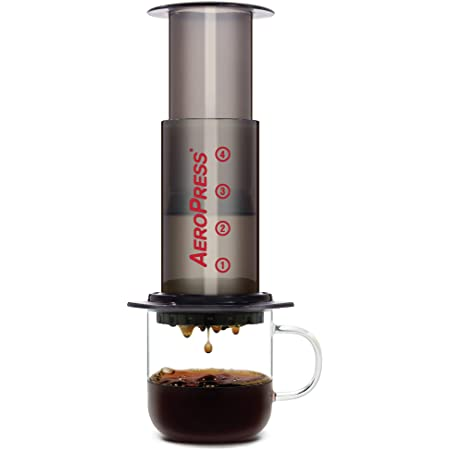

AeroPress Coffee

Description
The AeroPress is a manaul coffeemaker consisting of a cylindrical chamber and a plunger with an airtight silicone seal.
Ground coffee beans and water are steeped inside and are forced through a filter by pressing the plunger through the chamber.
Instructions
- Bring 7 oz (200 g) of water to a boil (205F).
- Weight out 15 - 18 grams of coffee beans depending on your preferred strength and grind to a texture slightly finer than sea salt.
- Insert a paper filter into the Aeropress's detachable plastic cup and then screw it onto the chamber.
- Add ground coffee beans into the chamber.
- Add boiling water to the chamber until the level is between the 3 and 4 on the side of the chamber.
- Gently stir the water for 10 seconds, then place the plunger end into the chamber.
- Let the coffee brew for 2 minutes.
- Place the Aeropress on a cup (filter side down) and begin plunging. Stop once you hear a hissing sound.
- Unscrew the filter cap, and pop the puck of condensed grounds by pushing the plunger through the remainder of the chamber.